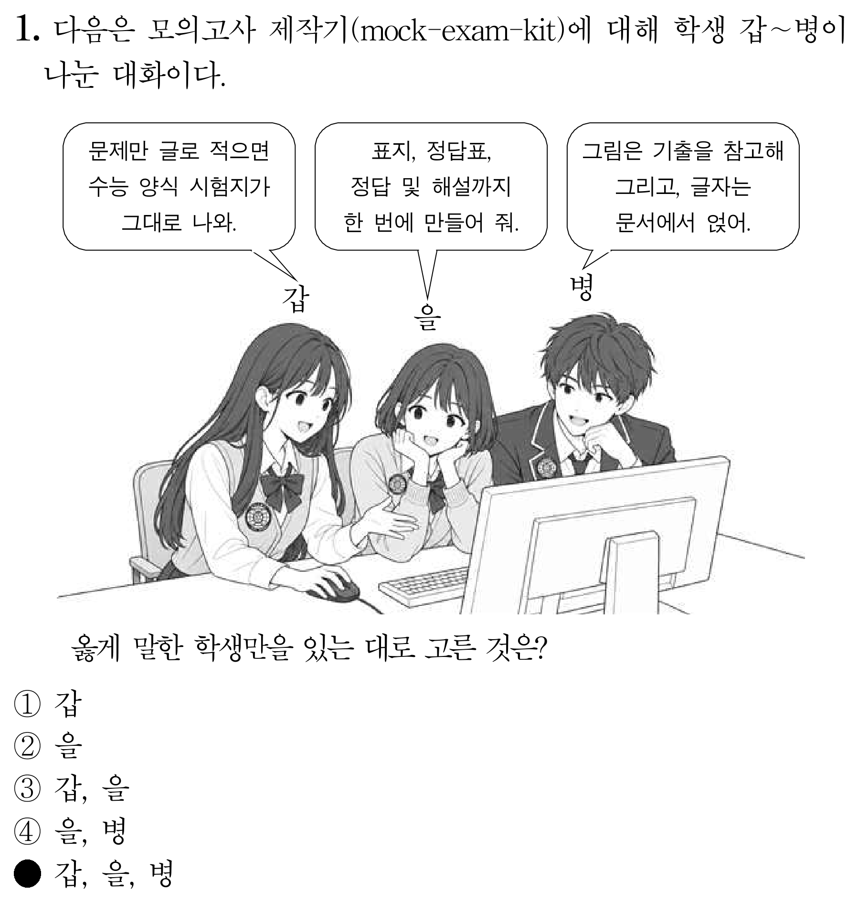

문제를 글로 적으면 수능 탐구 영역 시험지 양식 그대로 표지·문제지·정답표·정답 및 해설 PDF가 나옵니다. 주제는 무엇이든 됩니다. 이 도구로 만든 모의고사는 아래에서 받을 수 있어요.
문제, 보기, 정답, 표와 그래프의 숫자를 텍스트 파일 하나에 적습니다. 해설도 같은 방식으로 적습니다.
인물·장면·안내판 같은 그림은 AI가 글자 없는 흑백 틀로 그리고, 제목·대사·숫자는 문서에서 그 위에 얹습니다. 그래프와 도식은 코드로 정확히 그립니다.
실제 수능 시험지 파일의 글꼴과 칸 모양을 빌려 두 단으로 배치하고, 교시마다 표지를 붙입니다. 표지의 필적 확인 문구, 과목, 교시는 문제 파일에서 읽습니다.
같은 문제 파일에서 평가원 양식의 정답표와 3단 정답 및 해설 PDF를 만듭니다. 전체 합본과 교시별 파일이 함께 나옵니다.
문제지는 한글(.hwp)과 PDF로 저장되어 고쳐 쓰거나 바로 인쇄할 수 있습니다. 정답표와 해설은 한글 없이도 만들어집니다.
이 도구를 받아서 다른 주제로 직접 시험지를 만들 수도 있습니다. 방법은 아래에 있어요.
Windows와 한컴오피스 한글이 설치된 컴퓨터, Python 3.10 이상이 필요합니다. AI에게 맡길 때는 저장소의 AGENTS.md부터 읽게 하세요.
구해 둔 기출·모의고사 문제지(PDF·이미지)를 assets/reference/ 폴더에 넣으면, AI가 자료 형식과 그림 구도를 학습해 평가원 문항에 맞춥니다. 저장소에는 기출 원본이 들어 있지 않습니다.
인물·장면·안내판은 이미지 생성 AI가 글자 없는 흑백 틀로 그리고, 수치가 정답을 좌우하는 그래프·도식은 코드로 정확히 그립니다. 글자와 숫자는 문서 개체로 얹어 오타가 없습니다.
AGENTS.md와 docs/에 출제 노하우, 표지·정답표·해설 양식의 실측 수치, 검증 절차가 정리되어 있어 어떤 AI든 같은 품질로 이어 만듭니다.
GitHub에서 저장소를 받습니다.
git clone https://github.com/dohye0508/mock-exam-kit.git
cd mock-exam-kit한글 자동 실행, 문서 처리, 그래프 그리기용 패키지입니다.
pip install -r requirements.txtcontent의 교시 파일로 표지 포함 문제지 합본, 정답표, 정답 및 해설 PDF 세 개가 out 폴더에 생깁니다. 한 교시 본문만 보려면 두 번째 줄처럼 씁니다.
python tools/build_final.py out
# 한 교시만
python -m examkit build content/1교시.md -o out/1docs/project-template.md대로 프로젝트 문서를 쓰고 content에 교시별 파일을 씁니다. 해설은 content/N교시_해설.md에 적으면 함께 만들어집니다.
# 검사부터 표지·정답표·해설까지 한 번에
python tools/build_final.py out content/1교시.md## 10. [3점]
그림은 면학 시간대별로 자는 학생 수를 조사한 가상의 자료이다.
::: figure bar
labels: 아침, 8교시, 1차, 2차
values: 18, 7, 4, 11
:::
? 이에 대한 설명으로 옳은 것만을 <보기>에서 있는 대로 고른 것은?
::: bogi
ㄱ. 아침 면학에 자는 학생이 가장 많다.
ㄴ. 8교시와 1차의 합은 2차와 같다.
ㄷ. 1차 면학에 자는 학생이 가장 많다.
:::
@set A
@answer 3
| 적는 것 | 시험지에서 |
|---|---|
| --- … --- | 파일 맨 위 설정: 시험명·교시·영역·과목·쪽수, 표지의 필적 확인 문구(handwriting) |
| ## 번호. [3점] | 새 문제 시작. [3점]을 붙이면 배점 표시 |
| ? 질문 | 문제의 질문 줄 |
| ::: box | 네모 자료 상자 |
| ::: table | 표 |
| ::: figure | 막대·꺾은선·원 그래프, 연표, 배치도 |
| ::: figure file | 그림 파일을 넣고 그 위에 글상자·말풍선·이름표를 얹기 |
| bubbleN · labelN | 그림 위 말풍선과 갑·을·병 이름표 (위 1번 문항처럼) |
| textN · tableN | 그림 속 빈 판에 글자·표 얹기 |
| ::: grid | (가)(나)(다) 짝짓기 선택지 |
| {col} {page} | 문제를 새 단·새 쪽에서 시작 |
| ::: bogi + @set | <보기> 상자 (ㄱ, ㄴ, ㄷ)와 ① ㄱ ~ ⑤ ㄱ, ㄴ, ㄷ 조합 |
| $ 수식 $ | LaTeX 수식 (분수, 제곱, 합 기호) |
| ① ~ ⑤ | 문장형 선택지 |
| @answer | 정답 번호. 정답표·해설에 쓰임 |
| N교시_해설.md | ## N. [출제의도] … 아래 해설을 적으면 정답 및 해설 PDF로 |